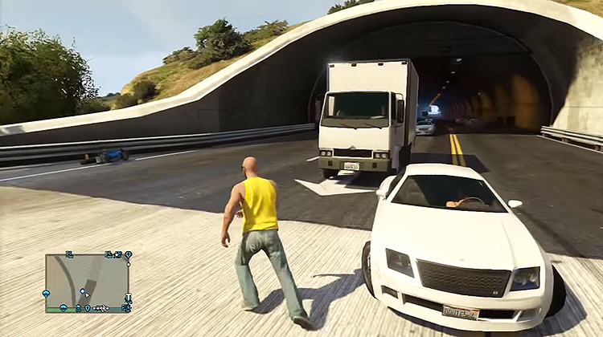
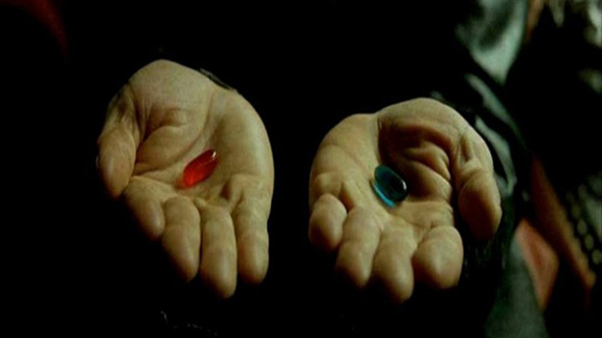

Desde hace años circula entre científicos y entusiastas la idea de que
nuestro mundo no es, en realidad, real. Hay quienes sugieren que se trata
de una simulación en la que vivimos controlados por otro ser como si
fuéramos juguetes, mientras que otros aseguran tener pruebas de que la
realidad es, de hecho, un holograma. Revisemos las ideas de quienes creen
posible que vivamos en un 'matrix'.
Vivimos en el mundo que, de hecho, es una simulación de vida, creada por
un "programador", que controla todo lo que hacemos como si fuéramos los
personajes del juego Sims, opina Rich Terrile, director del Centro de
Computación Evolutiva y Diseño Automatizado del Laboratorio de Propulsión
a Chorro de la NASA.
El científico piensa que no se puede demostrar el hecho de que no seamos
modelos computarizados, ya que "la realidad es producto de una arquitectura
compleja que apareció fuera de la conciencia humana". Por lo tanto, Terrile
sugiere la idea de que nuestro mundo se comportaría igual que la realidad
del videojuego de aventura y conducción 'Grand Theft Auto'.

"Usted ve exactamente lo que necesita ver en la ciudad en este momento,
reduciendo una metrópoli hasta el tamaño de una consola. El universo se
comporta de la misma manera. En la mecánica cuántica, las partículas no
tienen determinado estado si no están siendo observados en este momento.
Muchos teóricos han pasado mucho tiempo tratando de explicarlo. Una de
las posibles explicaciones es que vivimos en una especie de simulación,
viendo lo que tenemos que ver en el momento oportuno para alguien",
explica a Vice.
Terrile cree incluso que estamos a punto de modelar nuestro propio universo
y ser "programadores" de un 'matrix'. Uno de los logros que podría contribuir
a ello es la capacidad de introducir la conciencia artificial en las máquinas,
lo que -según él- será posible dentro de 30 años.
